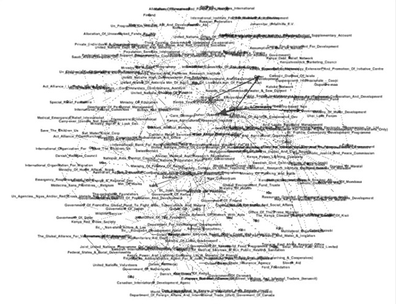

LLM Summarizer
Using LLM to summarize regulatory documents.
Objective. Provide accurate, useful summaries of long, complex regulatory documents issued by multiple jurisdictions in multiple languages.
Approach:
- Built in Python in Azure Databricks
- These documents were non-uniform -- different layouts, lengths, and features
- Extracted main text, ignoring headers, footers, logos, and other extraneous features
- Used custom chunking approach to retain overall context of document while chunking
- Prompt engineering to ensure most relevant details were captured and output was highly readable
- Tested and adapted to work across multiple languages, including languages with non-Latin scripts
- First iteration used GPT-3.5 with a 4k context window; later upgraded to o1-mini, achieving even stronger results
- Interviews with stakeholders to ensure I was targeting the right sources
- Deployed in PoC environment for stakeholder testing
- Put together a group of early test users and maintained regular contact with them throughout testing, integrating multiple points of feedback (e.g., adding/deleted certain sources, extracting keywords, overcoming inaccuracies in some languages, etc) into the approach
Results. Stakeholders are highly satisfied, reporting significant time savings. The solution is currently being extended to cover even more jurisdictions and languages.